Plastiche interne e pulsanti appiccicosi, lucidi o scrostati? Rimuoviamo lo strato soft touch degradato e ripristiniamo le parti in plastica originali dell'abitacolo, senza sostituirle.
Il soft touch è il rivestimento gommato e vellutato che ricopre pulsanti, comandi e plastiche di molte auto. Con il tempo si degrada: diventa appiccicoso, trattiene lo sporco e si stacca a chiazze, rovinando l'aspetto di tutto l'abitacolo.
Presso Lorenzo Garage Detailing a Torreglia (Padova) eseguiamo il ripristino soft touch: rimuoviamo completamente lo strato appiccicoso e riportiamo le parti in plastica originali a una finitura pulita e uniforme.
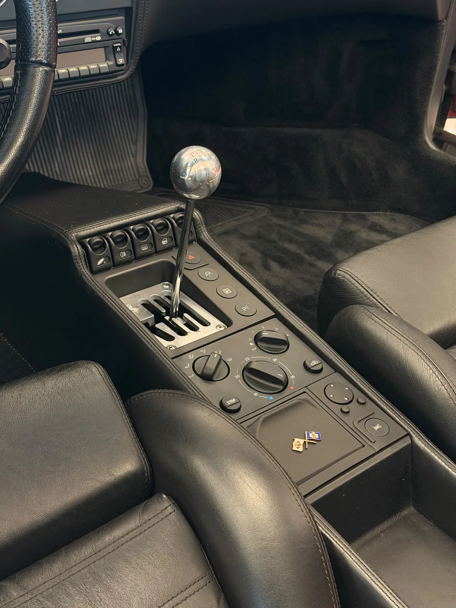
Superfici appiccicose, macchiate e scrostate: lo stato delle plastiche prima dell'intervento.
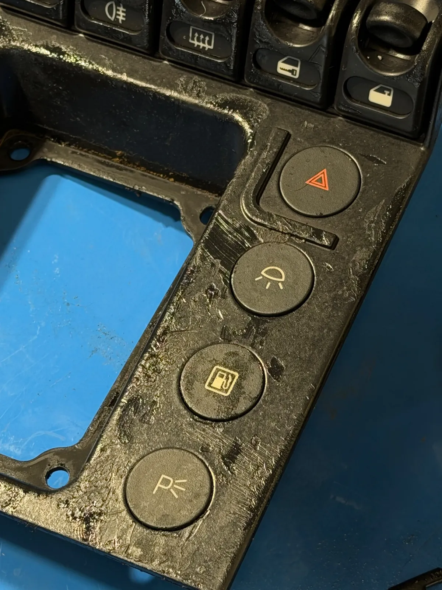
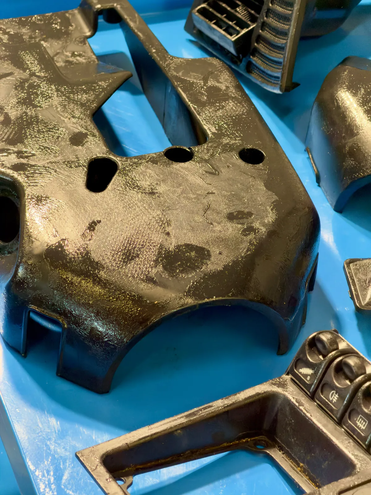
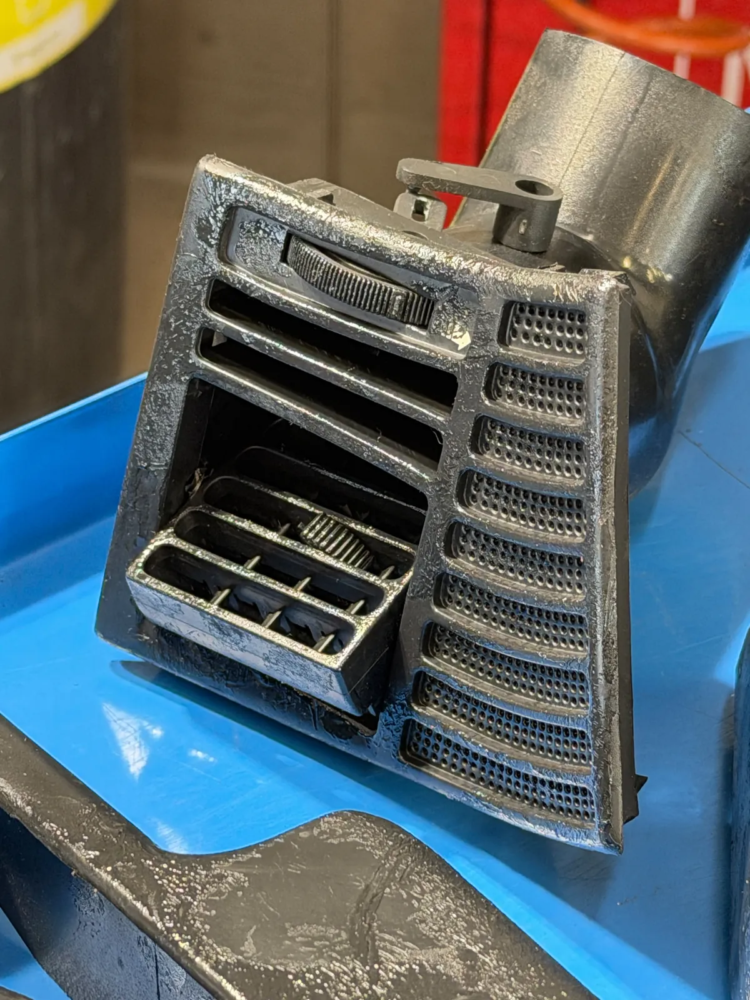
Foto reali di un lavoro su una Ferrari: gli stessi componenti prima e dopo il ripristino.
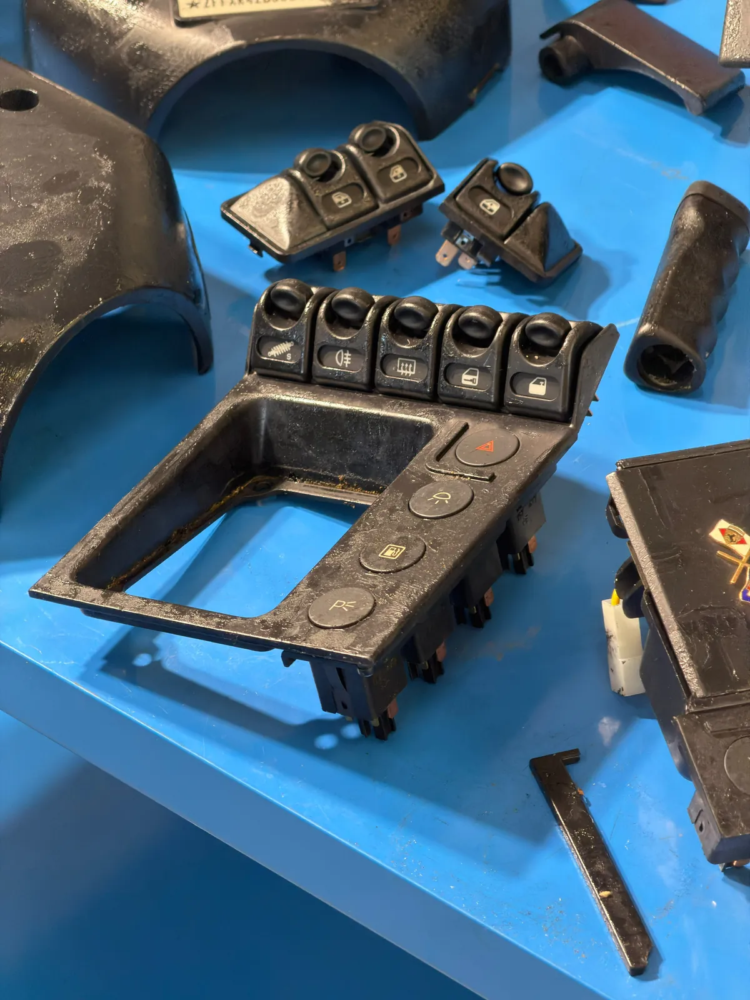
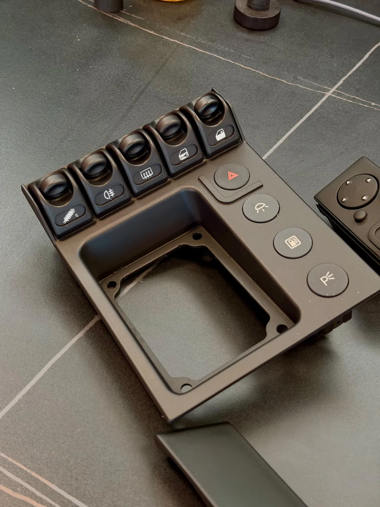
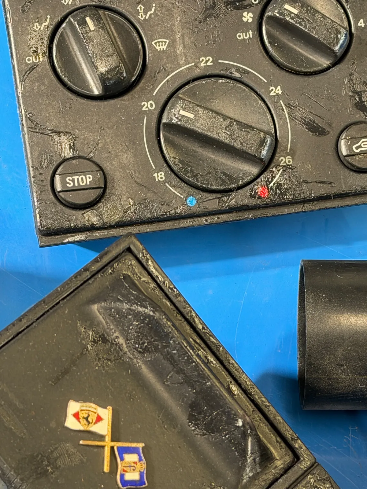
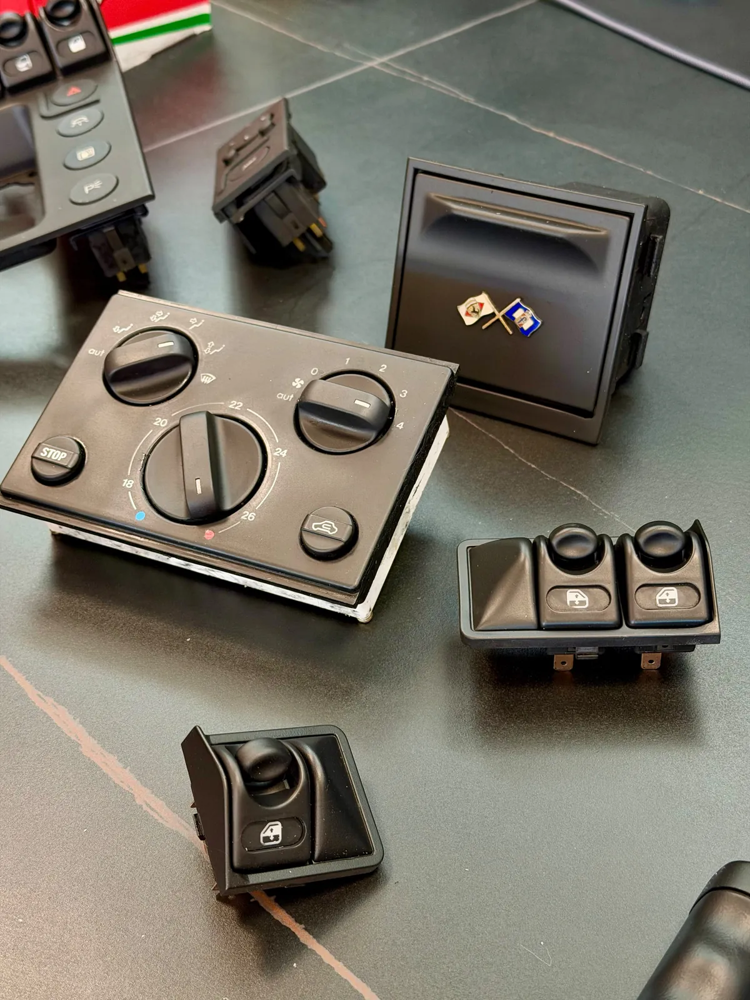
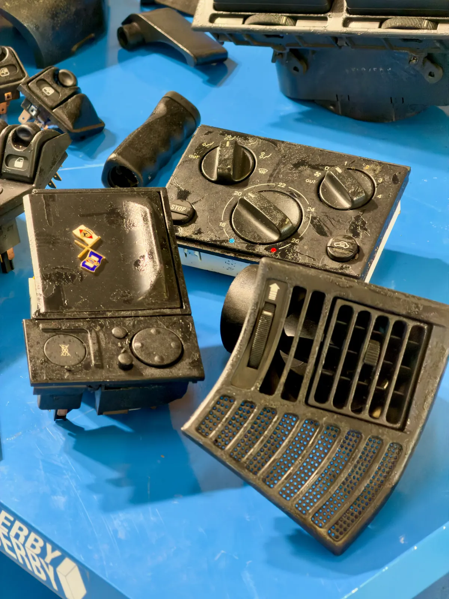
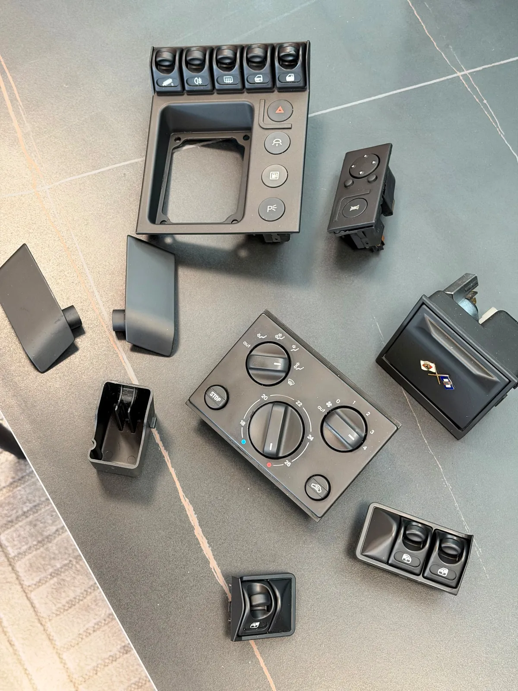
Ogni abitacolo è diverso: valutiamo insieme quali parti trattare.
I tempi dipendono da quante parti vanno trattate e dal loro stato: pochi pulsanti richiedono meno tempo di un intero tunnel centrale. Li concordiamo in fase di preventivo.
Il prezzo varia in base alle condizioni e alla vettura, perché ogni lavoro è unico: incidono il numero di componenti e il loro stato. Contattaci per una consulenza gratuita e un preventivo su misura.
I componenti ripristinati e rimontati nel tunnel centrale. Per una pulizia completa dell'abitacolo scopri anche il detailing interni.
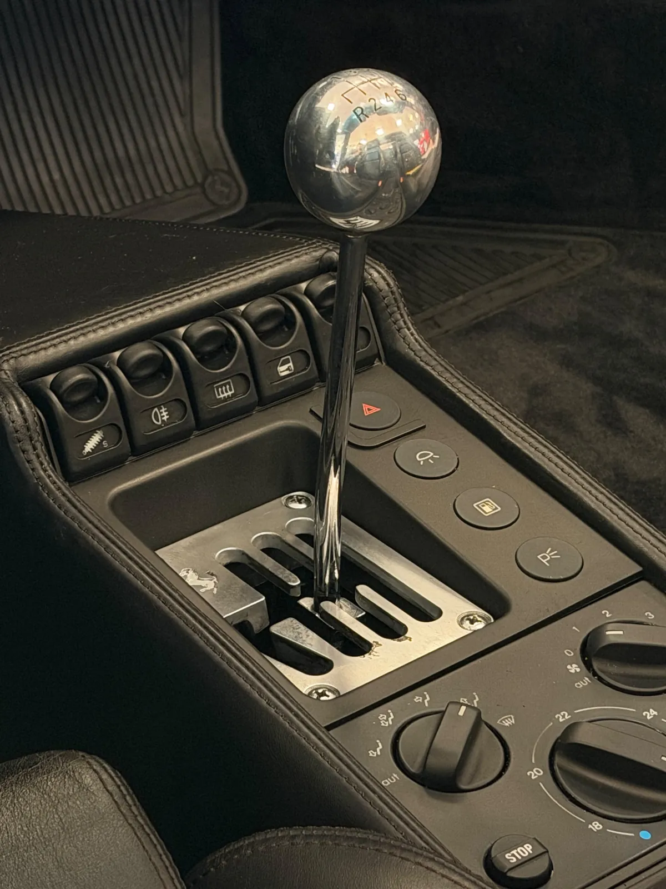
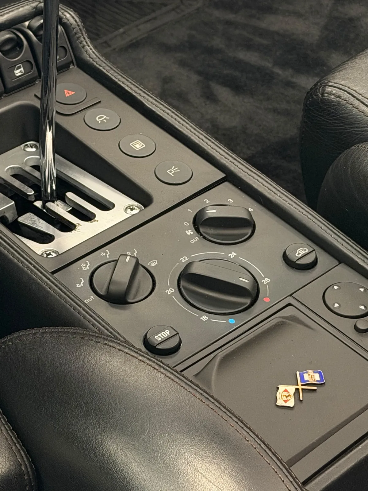
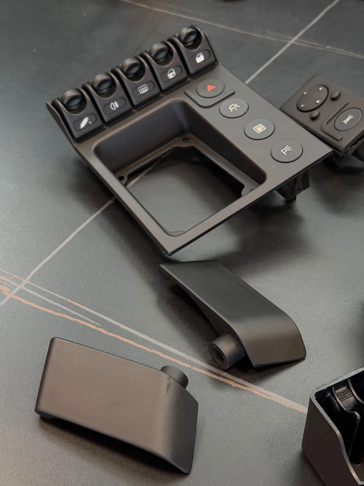
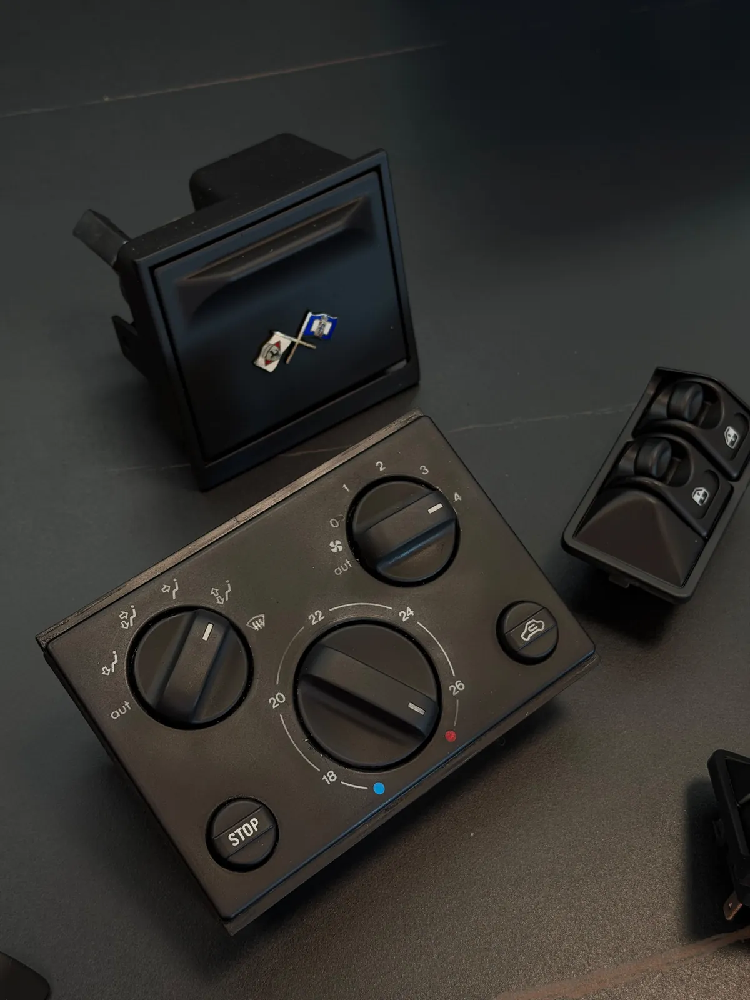
Con gli anni il rivestimento gommato si degrada. Calore, sole e usura fanno diventare il soft touch appiccicoso, lucido o scrostato: trattiene polvere e sporco e lascia residui sulle dita. È un problema comune su molte auto, in particolare su sportive e auto d'epoca.
Sì. Rimuoviamo completamente lo strato appiccicoso e ripristiniamo le parti in plastica originali, così non serve cercare ricambi, spesso costosi o difficili da trovare sulle auto d'epoca.
Le parti in plastica rivestite di soft touch dell'abitacolo, come pulsanti, comandi del clima, cornici del tunnel centrale, bocchette dell'aria e coperture del piantone sterzo.
Sì. Le foto di questa pagina mostrano proprio il ripristino delle plastiche interne di una Ferrari, dallo smontaggio dei componenti al rimontaggio nel tunnel centrale.
Il prezzo varia in base alle condizioni e alla vettura: incidono soprattutto il numero di componenti da ripristinare e il loro stato. Ogni lavoro è unico: la consulenza è gratuita.
Dipende da quante parti vanno trattate. Pochi pulsanti richiedono meno tempo di un intero tunnel centrale: i tempi li concordiamo in fase di preventivo.
Ripristino soft touch per Padova, Abano Terme, Torreglia e provincia. Mandaci una foto delle plastiche su WhatsApp per una prima valutazione.
Scrivici su WhatsApp